Resampling Models#
Resampling models generate votes based on resampling procedures on a given central vote.
- resampling(num_voters: int, num_candidates: int, phi: float, rel_size_central_vote: float, central_vote: set = None, impartial_central_vote: bool = False, seed: int = None) list[set[int]][source]#
Generates approval votes from the resampling model. This model is parameterised by a central vote and two parameters
phiandrel_size_central_vote. When generating an approval vote, all candidates are considered one after the other. For a given candidate, with probability1 - phiit is (dis)approved as is the case in the central vote; with probabilityphi, it is resampled: approved with probabilityrel_size_central_voteand not approved with probability1 - rel_size_central_vote.A collection of num_voters vote is generated independently and identically following the process described above.
- Parameters:
num_voters (int) – Number of Voters.
num_candidates (int) – Number of Candidates.
phi (float) – The resampling probability, guiding the dispersion.
rel_size_central_vote (float) – The relative size of the central vote.
central_vote (set) – The central vote. Ignored if
impartial_central_vote = True.impartial_central_vote (bool, default:
False) – If true, the central vote is sampled fromimpartial()with the same value for the parameterrel_size_central_voteas passed to this sampler.seed (int, default:
None) – Seed for numpy random number generator.
- Returns:
Approval votes.
- Return type:
list[set[int]]
Examples
from prefsampling.approval import resampling # Sample a profile from the resampling model with 2 voters and 3 candidates and # parameters phi = 0.5, rel_size_central_vote = 0.2 resampling(2, 3, 0.5, 0.2) # You can also provide the central vote resampling(2, 3, 0.5, 0.2, central_vote={0, 1}) # Or it can be sampled uniformly at random resampling(2, 3, 0.5, 0.2, impartial_central_vote=True) # For reproducibility, you can set the seed. resampling(2, 3, 0.5, 0.2, seed=1657) # Parameter phi needs to be in [0, 1] try: resampling(2, 3, 1.2, 0.2) except ValueError: pass try: resampling(2, 3, -0.2, 0.2) except ValueError: pass # Parameter rel_size_central_vote needs to be in [0, 1] try: resampling(2, 3, 0.5, 1.2) except ValueError: pass try: resampling(2, 3, 0.5, -0.2) except ValueError: pass
Validation
For the resampling model, there is a known expression for the probability of generating a given approval ballot. Indeed, consider a case with
 candidates, resampling
parameters
candidates, resampling
parameters  , and the central vote 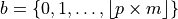. Then, when generating
a single ballot, the probability for a candidate
, and the central vote 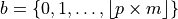. Then, when generating
a single ballot, the probability for a candidate  to be approved of is:
to be approved of is: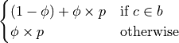
From this, since votes are sampled independently, everything is known. We can thus validate this model.
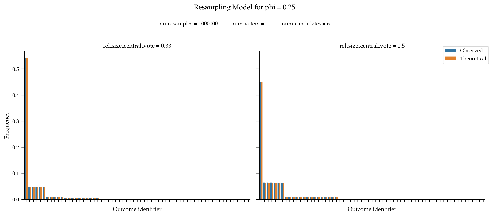 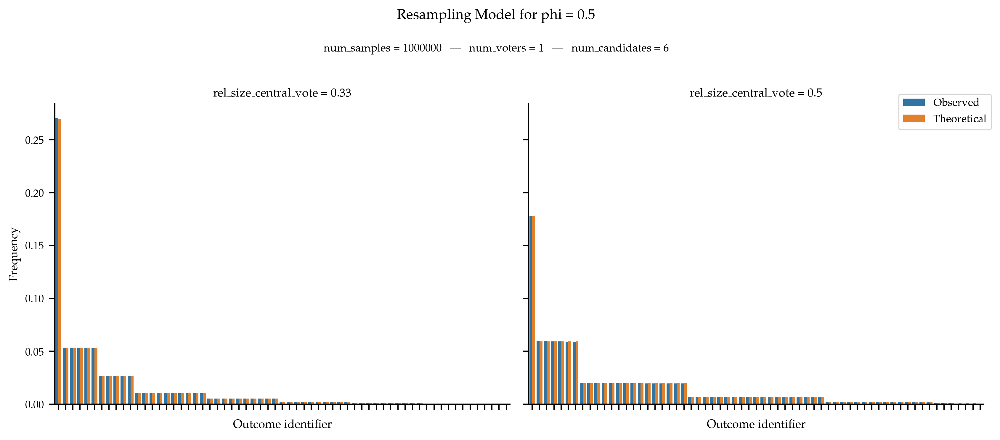 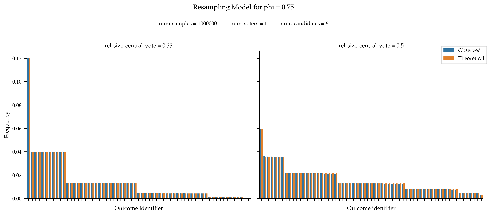 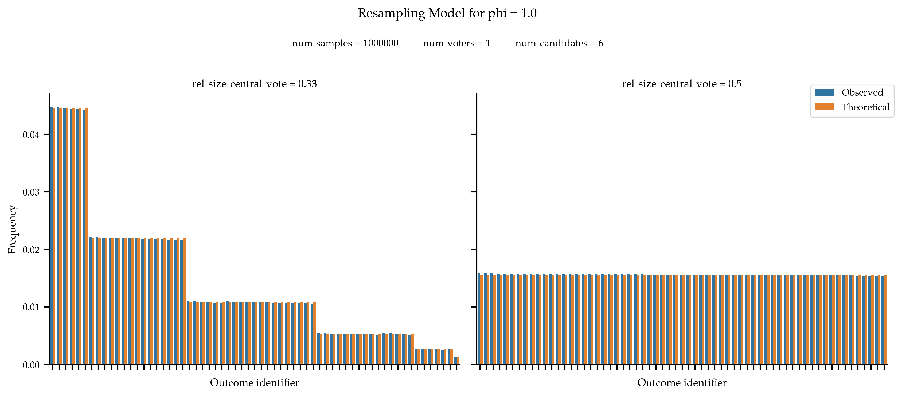References
How to Sample Approval Elections?, Stanisław Szufa, Piotr Faliszewski, Łukasz Janeczko, Martin Lackner, Arkadii Slinko, Krzysztof Sornat and Nimrod Talmon, Proceedings of the International Joint Conference on Artificial Intelligence, 2022.
{kind=link}
{kind=link}
{kind=link}
{kind=link}
- disjoint_resampling(num_voters: int, num_candidates: int, phi: float, rel_size_central_vote: float | Iterable[float], num_central_votes: int = None, central_votes: Collection[Collection[int]] = None, impartial_central_votes: bool = False, seed: int = None) list[set[int]][source]#
Generates approval votes from disjoint resampling model. In this model, we first generate
num_central_votesdisjoint central votes (they can also be provided). Then, when generating a ballot, we select at random one central vote uniformly at random and then use the resampling procedure with this central vote (seeresampling()for the details). This is essentially a mixture of several resampling samplers with different disjoint central votes.The procedure to generate the central votes is as follows. Each central vote will be of size ⌊rel_size_central_vote * num_candidates⌋. We uniformly at random partition the candidates into
num_central_votesparts of such size. Note that this implies that some candidates can appear in no groups. Moreover, if rel_size_central_vote * num_central_votes > 1, then the model is not well-defined. Ifimpartial_central_votes == Falseandcentral_votes is None, then the central votes are always: {0, 1, …, s - 1}, {s, s + 1, …, 2s - 1}, … where s is equal to ⌊rel_size_central_vote * num_candidates⌋.A collection of num_voters vote is generated independently and identically following the process described above.
- Parameters:
num_voters (int) – Number of Voters.
num_candidates (int) – Number of Candidates.
phi (float) – Disjoint resampling model parameter, denoting the noise.
rel_size_central_vote (float | Iterable[float]) – The relative size of the central vote. If a single value is given, it is used for all groups, otherwise, one value per group needs to be provided.
num_central_votes (int, default:
None) – The number of central votes.central_votes (Collection[Collection[int]], default:
None) – The central votes of the different groups. If this parameter is not used, the central votes are generated randomly.impartial_central_votes (bool, default:
False) – If set toTrue, then the central votes are generated at random following a uniform distribution over all suitable collection of central votes.seed (int, default:
None) – Seed for numpy random number generator.
- Returns:
Approval votes.
- Return type:
list[set[int]]
Examples
from prefsampling.approval import disjoint_resampling # Sample a profile from the disjoint resampling model with 2 voters and # 3 candidates and parameters phi = 0.5, rel_size_central_vote = 0.2 # and 2 central votes (here {0} and {1}) disjoint_resampling(2, 3, 0.5, 0.2, num_central_votes=2) # The central votes can be sampled uniformly at random disjoint_resampling(2, 3, 0.5, 0.2, num_central_votes=2, impartial_central_votes=True) # Or they can be provided. disjoint_resampling(2, 3, 0.5, 0.2, central_votes=({0, 1}, {2})) # Don't forget that they have to be disjoint try: disjoint_resampling(2, 3, 0.5, 0.2, central_votes=({0, 1}, {1, 2})) except ValueError: pass # You need to use either num_central_votes (with or without impartial_central_votes) # or central_votes try: disjoint_resampling(2, 3, 0.5, 0.2) except ValueError: pass # For reproducibility, you can set the seed. disjoint_resampling(2, 3, 0.5, 0.2, num_central_votes=2, seed=1657) # Parameter phi needs to be in [0, 1] try: disjoint_resampling(2, 3, 1.5, 0.2, num_central_votes=2) except ValueError: pass try: disjoint_resampling(2, 3, -0.5, 0.2, num_central_votes=2) except ValueError: pass # Parameter rel_size_central_vote needs to be in [0, 1] try: disjoint_resampling(2, 3, 0.5, 1.2, num_central_votes=2) except ValueError: pass try: disjoint_resampling(2, 3, 0.5, -0.2, num_central_votes=2) except ValueError: pass
Validation
For the disjoint resampling model, since it basically consists of a mixture of resampling models, the probability distribution over the outcome is known: is it a linear combination of the probability of the mixed resampling models (see
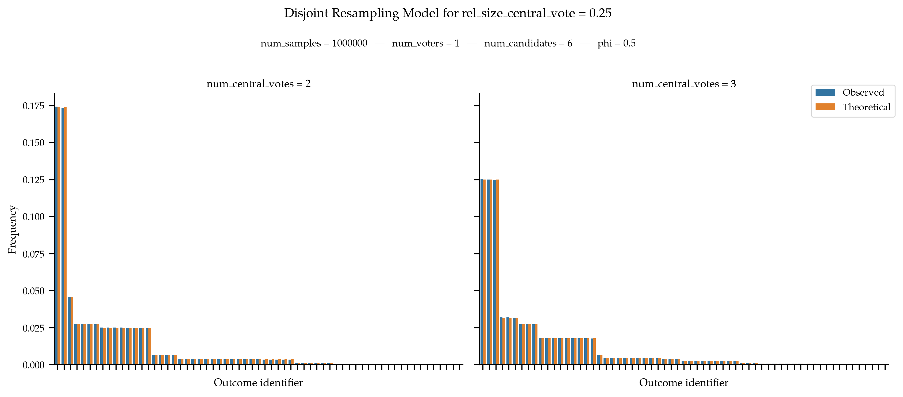 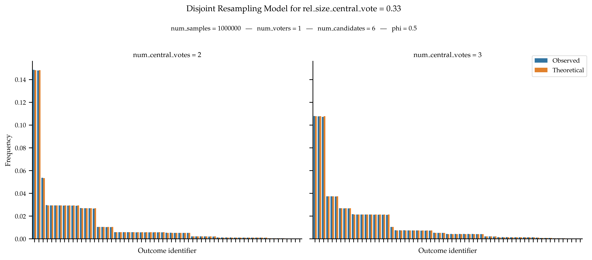resampling()for the details of the latter). We can thus validate this model.References
How to Sample Approval Elections?, Stanisław Szufa, Piotr Faliszewski, Łukasz Janeczko, Martin Lackner, Arkadii Slinko, Krzysztof Sornat and Nimrod Talmon, Proceedings of the International Joint Conference on Artificial Intelligence, 2022.
{kind=link}
{kind=link}
- moving_resampling(num_voters: int, num_candidates: int, phi: float, rel_size_central_vote: float, num_legs: int, central_vote: set = None, impartial_central_vote: bool = False, seed: int = None) list[set[int]][source]#
Generates approval votes from moving resampling model. In the moving resampling model, the ballot of the first voter is always the central vote, other voters are grouped in so-called legs. Within a leg, votes are generated one after another using the resampling procedure (see
resampling()for the details) using as central vote the ballot of the previous voter (the first voter for the first voter of a leg).Note that for a given number of voters, votes are not sampled independently.
- Parameters:
num_voters (int) – Number of Voters.
num_candidates (int) – Number of Candidates.
phi (float) – The resampling probability, guiding the dispersion.
rel_size_central_vote (float) – The relative size of the central vote.
num_legs (int) – The number of legs.
central_vote (set) – The central vote. Ignored if
impartial_central_vote = True.impartial_central_vote (bool, default:
False) – If true, the central vote is sampled fromimpartial()with the same value for the parameterrel_size_central_voteas passed to this sampler.seed (int, default:
None) – Seed for numpy random number generator.
- Returns:
Approval votes.
- Return type:
list[set[int]]
Examples
from prefsampling.approval import moving_resampling # Sample a profile from the moving resampling model with 4 voters and 3 candidates and # parameters phi = 0.5, rel_size_central_vote = 0.2 and 2 legs moving_resampling(4, 3, 0.5, 0.2, 2) # You can also provide the central vote moving_resampling(4, 3, 0.5, 0.2, 2, central_vote={0, 1}) # Or it can be sampled uniformly at random moving_resampling(4, 3, 0.5, 0.2, 2, impartial_central_vote=True) # For reproducibility, you can set the seed. moving_resampling(4, 3, 0.5, 0.2, 2, seed=1657) # Parameter phi needs to be in [0, 1] try: moving_resampling(4, 3, 1.5, 0.2, 2) except ValueError: pass try: moving_resampling(4, 3, -0.5, 0.2, 2) except ValueError: pass # Parameter rel_size_central_vote needs to be in [0, 1] try: moving_resampling(4, 3, 0.5, 1.2, 2) except ValueError: pass try: moving_resampling(4, 3, 0.5, -0.2, 2) except ValueError: pass
Validation
There is no known expression for the probability distribution governing moving resampling models.
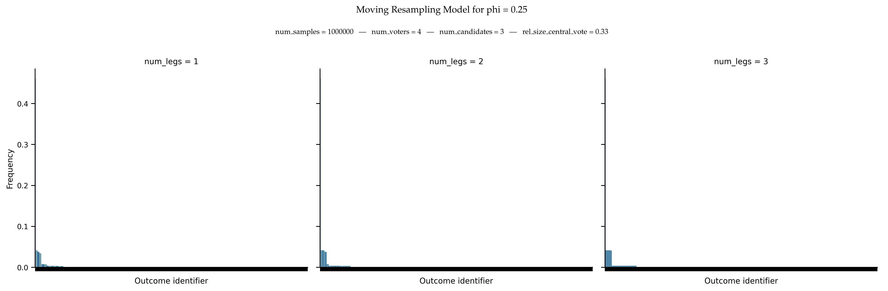 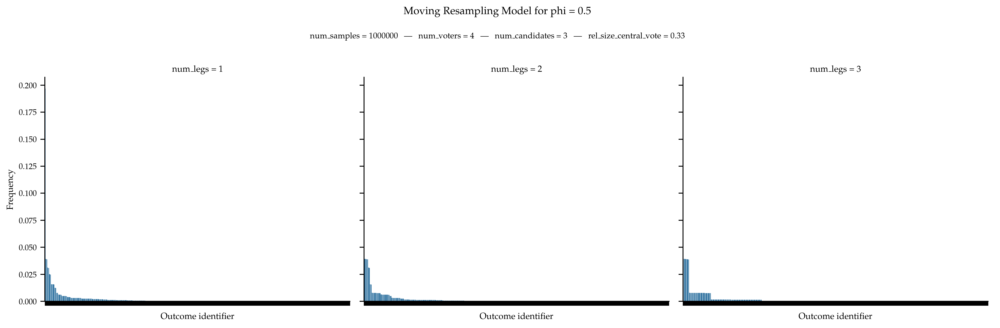 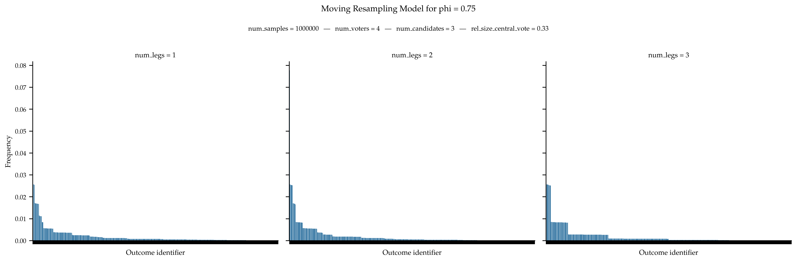 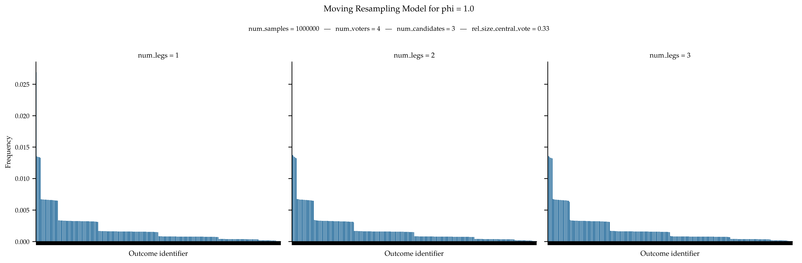References
None.
{kind=link}
{kind=link}
{kind=link}
{kind=link}